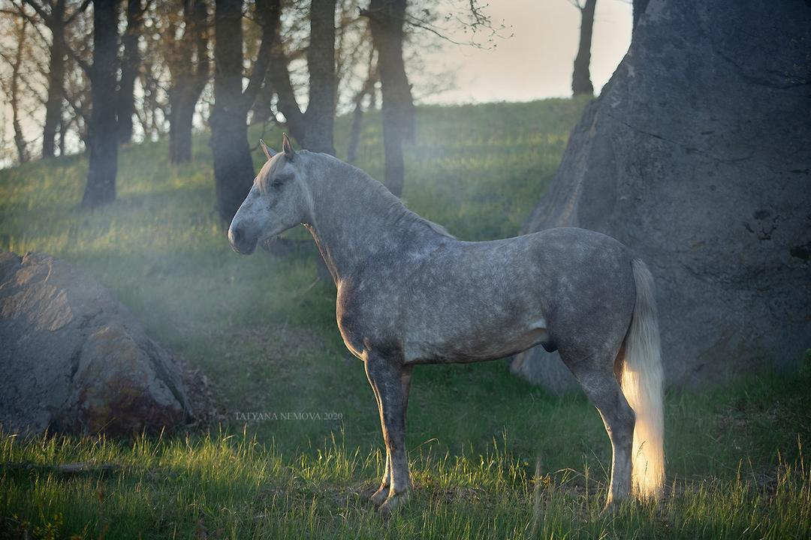

Pura Raza Española
Bucefalo XXXII
Основной производитель Yeguada MS. Классический барочный тип, просторные движения и мягкий ход.
Проверен по потомству.
Bucefalo XXXII импортирован из Испании, допущен в разведение ANCCE и имеет более 100 детей по данным фермы.
- Порода
- PRE
- Год рождения
- 2007
- Масть
- Серая
- Рост
- 160 см
- Статус
- Допущен в разведение
- Происхождение
- Испания

Наследие в движении.
В родословной Bucefalo XXXII представлены Gemelo II, Lebrijano III и Agente. По материнской линии отмечены лошади хозяйств Martinez Boloix и Perral.
По данным фермы, потомство наследует породный экстерьер, ориентированный на человека характер, покладистость и обучаемость.
Обсудить разведение и получить документы.
Свяжитесь с Марией Солдатовой напрямую.